A kiosk your field reps open on their phone: GPS + selfie check-in, a one-field-at-a-time client visit form with a site photo, and contacts & CRM leads created on the spot — tagged to the rep who found them.
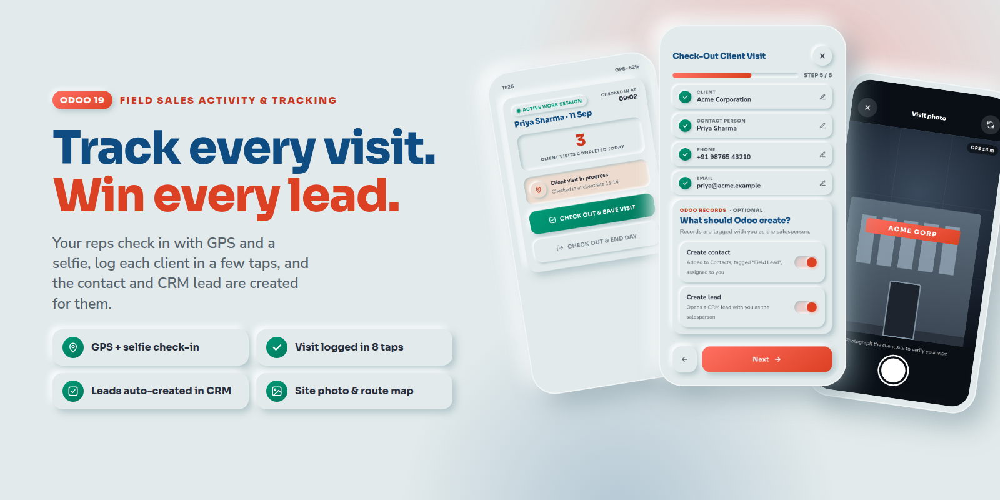
No menus to learn and no separate app to install — the rep signs into Odoo on their phone and lands on the kiosk. The same screen adapts to a tablet or a desktop.
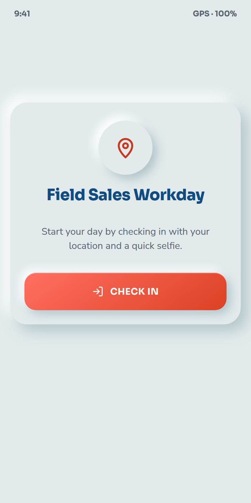
GPS lock plus a verification selfie. No selfie, no shift.
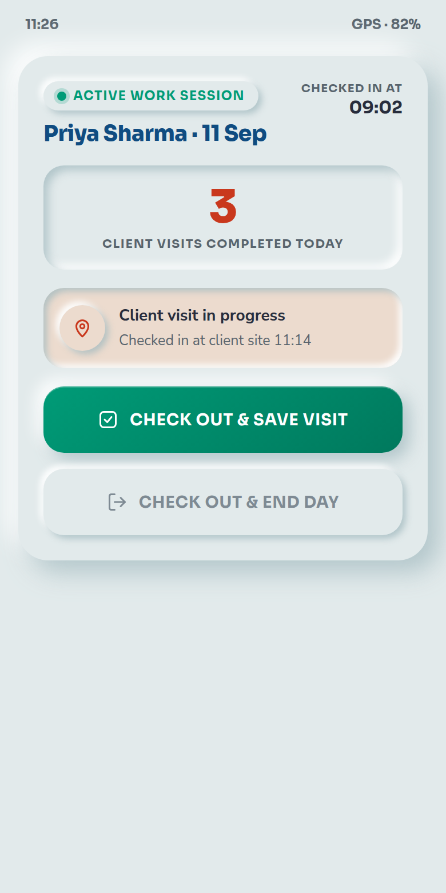
Arriving at the client checks the rep in on site, with the coordinates.
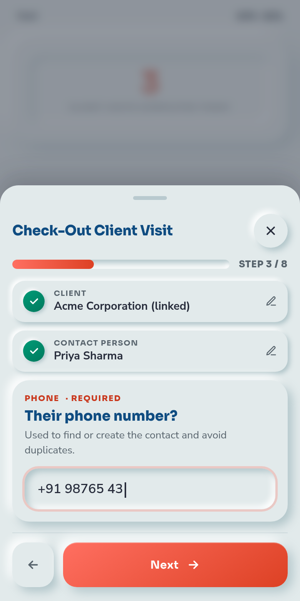
One question at a time. Completed steps fold away; buttons stay above the keyboard.
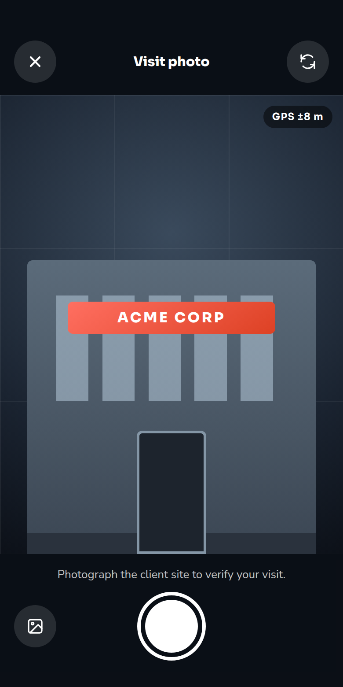
Full-screen camera for the site photo, then a checkout selfie ends the day.
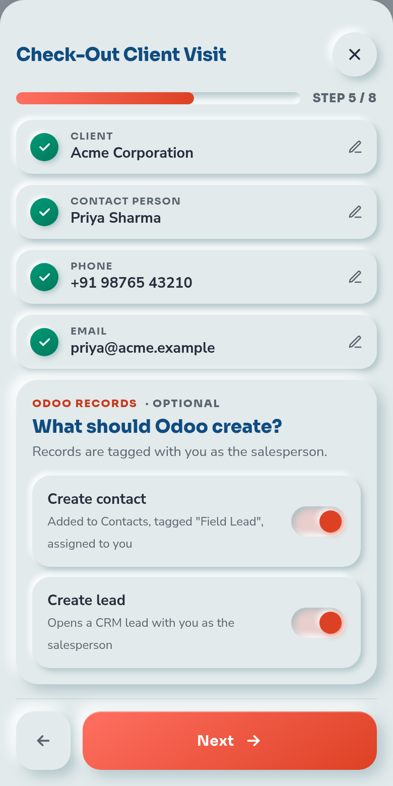
Long forms fail in the field. Reps skip fields, mistype, and give up when the keyboard hides the save button. So the visit form is a guided flow of eight small steps.
Step 5 of the form asks what Odoo should create. Switch on Create contact and Create lead and, the moment the rep checks out, both records exist — no back-office retyping.
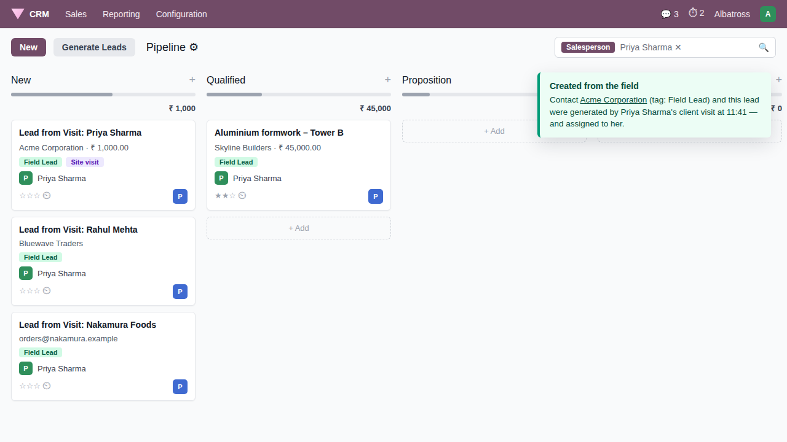
A company contact (plus a child contact for the person met) is created in Contacts with the Field Lead tag, so marketing can filter every prospect that came from the street.
The CRM lead carries the visit notes as its description and the salesperson who logged the visit as its owner. Pipeline attribution is automatic and honest.
Before creating anything the module matches by phone or email. An existing contact is reused, tagged, and assigned to the rep only if it had no salesperson yet.
Every client visit stores its own coordinates and accuracy radius, a site photo, check-in and check-out times and the computed duration. The rep sees a full summary before saving.
Flip to the front camera with one tap. Selfies show a face guide.
If the in-page camera is blocked, the phone's own camera app takes over.
Photos are downscaled on the device before upload — fine on 4G.
Selfies and site photos live on the session and visit records in Odoo.
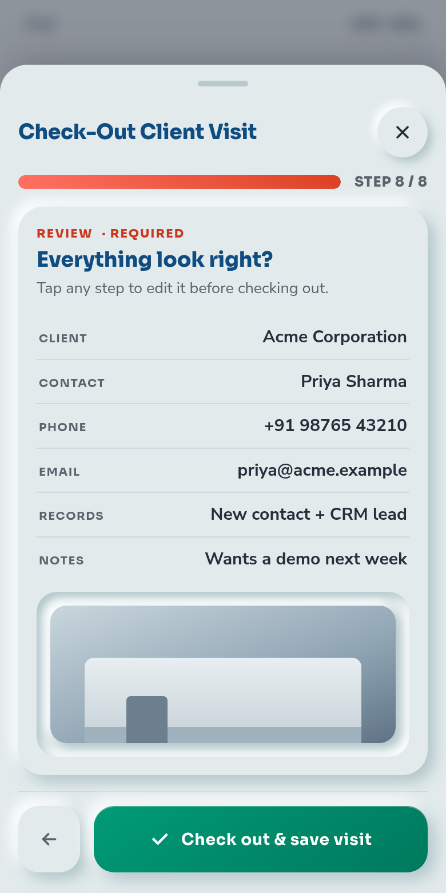
Sessions, visits and location pings are ordinary Odoo records — list them, filter them, group them by salesperson, and export them.
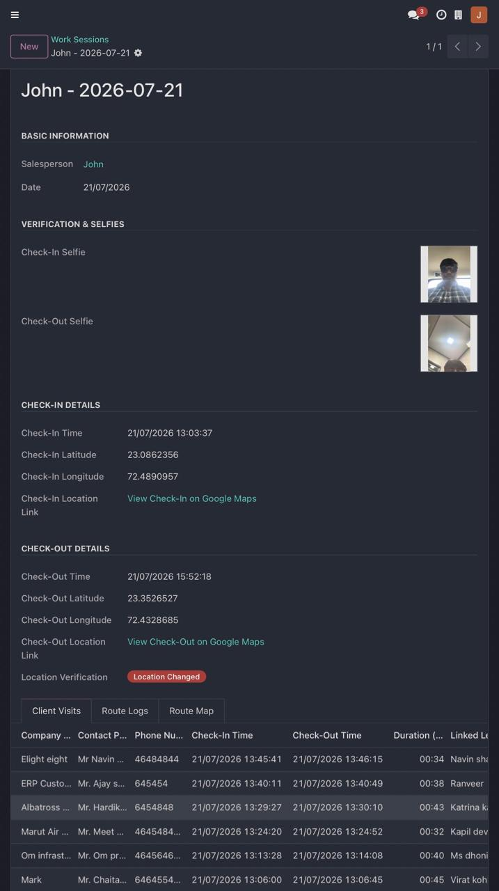
Check-in and check-out selfies, coordinates with Google Maps links, and a Location verification badge: "Same location" when the rep ended the day within 200 m of where it started, "Location changed" otherwise.
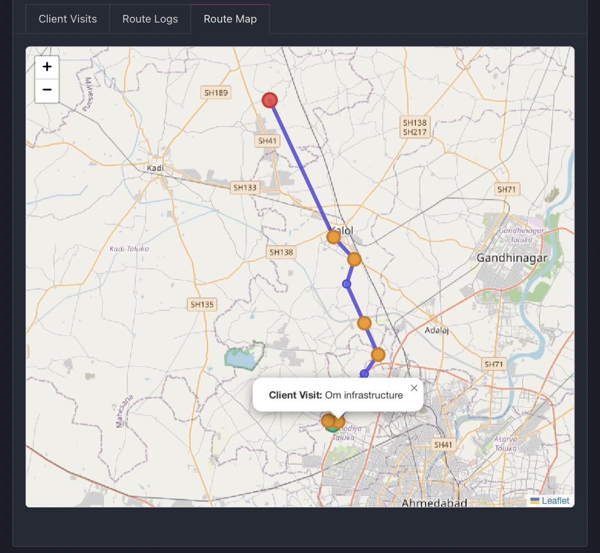
Check-in, interval pings every 15 minutes, each client visit and the check-out point drawn as a trajectory on an OpenStreetMap layer — bundled with the module, no API key.
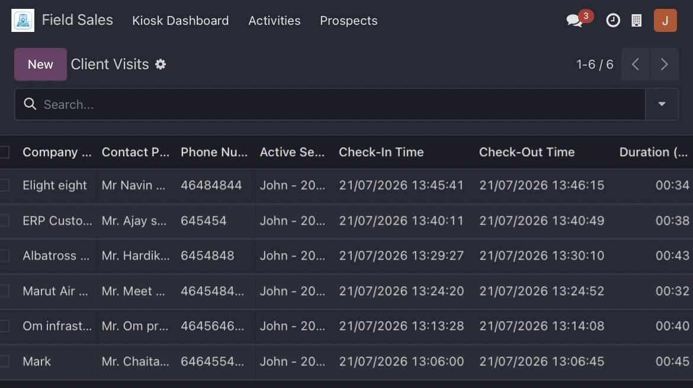
Status, salesperson, linked contact and lead, duration. Filters for My visits, Lead generated, Contact created; group by salesperson, session, status or day.
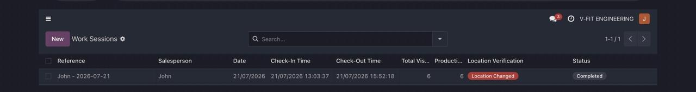
📄 End-of-day PDF — one click on a session prints a report with the rep, date, both selfies, location verification, the visit timeline with durations and notes, and the visit count.
Every workday is one session with its counters. Managers see everyone; reps see only their own.
Waits for a fix under 15 m (up to 7 s), rejects stale readings, stores lat/long to seven decimals plus the accuracy radius.
A session cannot open or close without a selfie. Both are attached to the session record.
One open session per rep, one open visit per session, and no day check-out while a visit is still in progress — enforced on the server.
Background pings every 15 minutes while checked in, drawn with visits on a Leaflet map inside the session form.
Representative sees and edits only their own sessions and visits. Manager sees everything and can delete.
A calm, high-contrast kiosk with big touch targets, scoped to its own screen so the rest of your Odoo looks exactly as before.
No third-party APIs, no subscriptions, no data leaving your server. Maps use the bundled Leaflet library with OpenStreetMap tiles.
| Odoo versions | 19.0 — Community and Enterprise |
|---|---|
| Depends on | base, web, crm |
| Devices | Any phone, tablet or desktop browser. Camera and GPS require HTTPS (or localhost). |
| Upgrading | From 1.x: a migration script marks past visits as completed and refreshes counters. |
| Tests | 18 automated tests cover sessions, visits, CRM generation and access rules. |
| Licence | OPL-1 |
Kiosk access; read / write / create own sessions, visits and pings; no delete.
All records, all reps, full rights, plus the Prospects view of Field Leads.
Contacts and leads are created on the rep's behalf even when the rep has no CRM rights of their own.
No. Any browser works. The kiosk is a responsive Odoo action, so it also runs inside the official Odoo mobile app if you prefer.
Browsers only allow camera and GPS on HTTPS (or localhost). Put Odoo behind HTTPS and it works. Until then, the "Phone camera" button uses the device's own camera app.
The session stays open and blocks a new check-in the next day, so it can't be missed. A manager can close it from the backend.
Yes. The first step searches your Contacts by name, phone or email. Pick one and phone and email prefill; the visit is linked instead of creating a new contact.
No. Location pings run only while a session is open, every 15 minutes, and only in the browser tab that has the kiosk open.
Both are single constants in the module (the Haversine threshold in the session model, the interval in the kiosk component) and are easy for your integrator to adjust.
We answer within one business day and ship fixes for confirmed bugs free of charge for 90 days after purchase.
Field Sales Activity & Tracking · © Albatross · Licence OPL-1